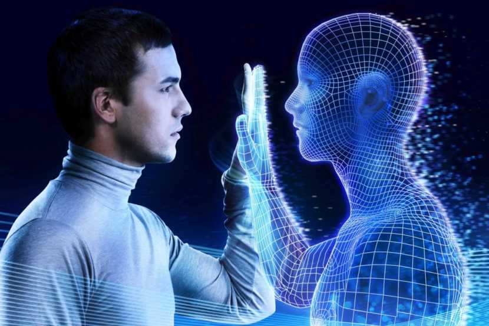

¿Como se expresan y se respetan las identidades diversas en el mundo digital?
En el mundo digital, la expresión y el respeto por las identidades diversas se manifiestan a través de la libertad de expresión y la creación de espacios seguros y inclusivos, donde se promueve el respeto mutuo y la no discriminación. Esto implica la protección de datos personales, el reconocimiento de la identidad de género y la orientación sexual, así como la lucha contra la desinformación y el discurso de odio.

Suplantación de identidad en redes sociales: cómo detectarla y qué hacer si la sufres
- -Las estafas financieras son el principal fin de este engaño, pero no el único.
- -Casi todas las redes sociales cuentan con políticas para evitar estos fraudes

Las redes sociales ofrecen tanto oportunidades como riesgos en relación con la identidad de género. Es importante fomentar un uso responsable y consciente de estas plataformas, promoviendo la inclusión, el respeto y la diversidad, al mismo tiempo que se combate la discriminación y la violencia en línea
Opiniones de alumno de 5to año
Todas las persona puede opinar que hacer con su cuerpo y como se sienten con su sex,de por si la sociedad y mentalidades van cambiando y se van acostumbrando a los nuevos cambios. En si,se puede hacer lo que desees siempre y cuando sea tu desicion
La indentidad de genero es para saber tu sexualidad sea femenino,masculino,lgtb,etc.Las rerdes sociales son para buscar informacion, ver noticias,para estar actualizados en el presente, tambien se puedencomunicarse mediante mensajes
Se refiere a como las personas se representa a si mismo en linea elegiendo nombres,imagenes y etiquetas de generos que reflejan su propia percepcion de su identidad que puede o no coincidir con el sexo asignado al nacer
Opino que se refiere a como eres,lo que quieres ser y como buscarverte,o enotras palabras,algo que te represente-.En este caso siendo reflejando en tus gusto,percepcion propia de genero,etc. las redes sociales son un medio de comunicacion.
Para mi la identidad de genero en lo que define en parte a la persona tambien siendo reflejada por sus gustos y las redes sociales son un medio de comunicacion.
Volver a la paginaprincipal